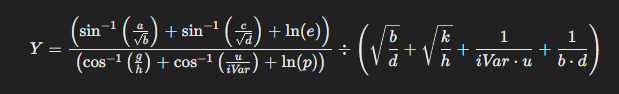

Simulación de Ecuaciones - [Santiago Gonzalez Olarte y Sebastian Castañeda]

Procesar
Error
Totales
Porcentaje
Total de errores de arcoseno
0
0%
Total de errores de arcocoseno
0
0%
Total de errores de raíz cuadrada
0
0%
Total de errores de división
0
0%
Total de errores de logaritmo natural
0
0%